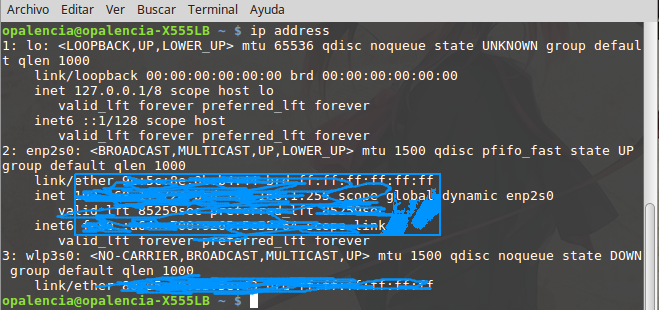

Mostrar-Manipular informacion de red ip > ip¶
Nombre del comando: ip
Man page online: https://linux.die.net/man/8/ip
Descripción: ip - mostrar / manipular enrutamiento, dispositivos, ruteo de políticas y túneles. Este comando es muy útil para administradores de red, pero para usuarios comunes con éstas opciones será más que suficiente.
Man page local: $ man ip o $ man ip > ip.txt
Instalado por defecto: Sí, al menos en Debian.
Algunas Opciones:
address Dirección de protocolo (IPv4 o IPv6) en un dispositivo.
-V, -Version Imprima la versión de la utilidad ip y salga.
route Mostrar información relevante del router.
Ejemplo 1: $ ip address, en este ejemplo se muestra toda la información relevante para un usuario común, solo necesitamos conocer cuál es nuestra ip privada (se puede ver en la imagen manchada de arriba), ya sea ésta del protocolo IPv4 o IPv6. Para quien no sepa, la ip privada identifica de manera única a un dispositivo, pc, celular, tablet, etc., por tanto es información delicada que no se debe divulgar.
Ejemplo 2: $ ip route, en este ejemplo se muestra información relevante del router, específicamente nos interesa conocer la ip que tiene asignada dicho dispositivo para realizar configuraciones. Todo router se configura accediendo por medio de su ip en un navegador web y pide usuario y clave; una vez tengamos toda esa información fácilmente se puede realizar algunas configuraciones importantes, tales como cambiar el nombre del SSID y asignar una clave a la misma, ya que las configuraciones por defecto de los router no son seguras.